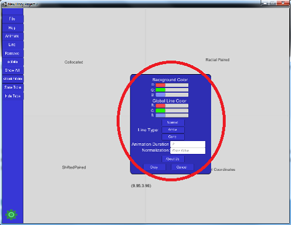
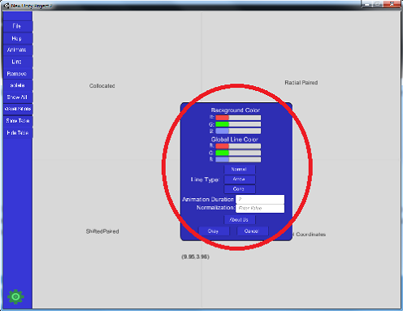

Viewing the dataset
To view the dataset currently being visualized following these steps steps. 1.After the dataset has been loaded, click the button on the left that says show table, and a data table with all the vectors will pop up from the right. 2. Now when you hover over a vector in the table, that corresponding vector will light up in the visualization. 3. In addition that vector that is hovered over will have dimension values displayed at top of the tabled, underneath where it says Data Table. 4. To hide the table, simply click the button that says hides tabled on the main panel on the left.


 
